건설재료시험기사 (2022-03-05 기출문제)
1과목: 콘크리트공학
1. 일반적인 경우 콘크리트의 건조수축에 가장 큰 영향을 미치는 요인은?
- 단위 굵은 골재량
- 단위 시멘트량
- 잔골재율
- 단위수량
(정답률: 71%)

2. 유동화 콘크리트에 대한 설명으로 틀린 것은?
- 미리 비빈 베이스 콘크리트에 유동화제를 첨가하여 유동성을 증개시킨 콘크리트를 유동화 콘크리트라고 한다.
- 유동화제는 희석하여 사용하고, 미리 정한 소정의 양을 2~3회 나누어 첨가하며, 계량은 질량 또는 용적으로 계량하고, 그 계량오차는 1회에 1% 이내로 한다.
- 유동화 콘크리트의 슬럼프 증가량은 100mm 이하를 원칙으로 하며, 50~80mm를 표준으로 한다.
- 베이스 콘크리트 및 유동화 콘크리트의 슬럼프 및 공기량 시험은 50m3 마다 1회씩 실시하는 것을 표준으로 한다.
(정답률: 61%)
3. 고압증기양생에 대한 설명으로 틀린 것은?
- 고압증기양생을 실시하면 백태현상을 감소시킨다.
- 고압증기양생을 실시하면 황산염에 대한 저항성이 향상된다.
- 고압증기양생을 실시한 콘크리트는 어느 정도의 취성이 있다.
- 고압증기양생을 실시하면 보통 양생한 콘크리트에 비해 철근의 부착강도가 크게 향상된다.
(정답률: 63%)
4. PS강재에 요구되는 일반적인 성질로 틀린 것은?
- 인장 강도가 작을 것
- 릴랙세이션이 작을 것
- 콘크리트와 부착력이 클 것
- 어느 정도의 피로 강도를 가질 것
(정답률: 58%)
5. 콘크리트 다지기에 대한 설명으로 틀린 것은?
- 콘크리트 다지기에는 내부진동기의 사용을 원칙으로 한, 사용이 곤란한 장소에서는 거푸집 진동기를 사용할 수 있다.
- 콘크리트는 타설 직후 바로 충분히 다져서 구석구석까지 채워져 밀실한 콘크리트가 되도록 하여야 한다.
- 진동다지기를 할 때에는 내부진동기를 하층의 콘크리트 속으로 0.1m 정도 찔러 넣는다.
- 재 진동은 콘크리트에 나쁜 영향이 생기므로 하지 않는 것을 원칙으로 한다.
(정답률: 63%)
6. 현장 타설 말뚝에 사용하는 수중 콘크리트의 타설에 대한 설명으로 틀린 것은?
- 굵은 골재 최대 치수 25mm의 경우, 관지름이 200~250mm의 트레미를 사용하여야 한다.
- 먼저 타설하는 부분의 콘크리트 타설속도는 8~10m/h로 실시하여야 한다.
- 콘크리트 상면은 설계면 보다 0.5m 이상 높이로 여유 있게 타설하고 경화한 후 이것을 제거하여야 한다.
- 콘크리트를 타설하는 도중에는 콘크리트 속의 트레미의 삽입 깊이는 2m 이상으로 하여야 한다.
(정답률: 34%)
7. 23회의 시험실적으로부터 구한 압축강도의 표준편차가 4MPa 이었고, 콘크리트의 품질기준강도(fcq)가 30MPa일 때 배합강도는? (단, 표준편차의 보정계수는 시험횟수가 20회인 경우 1.08이고, 25회인 경우 1.03이다.)
- 34.4MPa
- 35.7MPa
- 36.3MPa
- 38.5MPa
(정답률: 66%)
8. 숏크리트의 특징에 대한 설명으로 틀린 것은?
- 용수가 있는 곳에서도 시공하기 쉽다.
- 수밀성이 적고 작업 시에 분진이 생긴다.
- 노즐맨의 기술에 의하여 품질, 시공성 등에 변동이 생긴다.
- 임의 방향으로 시공 가능하나 리바운드 등의 재료손실이 많다.
(정답률: 68%)
9. 현장의 골재에 대한 체분석 결과 잔골재 속에서 5mm 체를 남는 것이 6%, 굵은 골재 속에서 5mm체를 통과하는 것이 11% 이었다. 시방배합표상의 단위 잔골재량이 632kg/m3, 단위 굵은 골재량이 1176kg/m3일 때 현장배합을 위한 단위 잔골재량은? (단, 표면수에 대한 보정은 무시한다.)
- 522 kg/m3
- 537 kg/m3
- 612 kg/m3
- 648 kg/m3
(정답률: 54%)
10. 프리텐션 방식의 프리스트레스트 콘크리트에서 프리스트레싱을 할 때의 콘크리트 압축강도는 얼마 이상이어야 하는가?
- 21 MPa
- 24 MPa
- 27 MPa
- 30 MPa
(정답률: 58%)
11. 시멘트의 수화반응에 의해 생성된 수산화칼슘이 대기 중의 이산화탄소와 반응하여 콘크리트의 성능을 저하시키는 현상을 무엇이라고 하는가?
- 염해
- 탄산화
- 동결융해
- 알칼리-골재반응
(정답률: 73%)
12. 콘크리트 배합설계에서 잔골재율(S/a)을 작게 하였을 때 나타나는 현상으로 틀린 것은?
- 소요의 워커빌리티를 얻기 위하여 필요한 단위 시멘트량이 증가한다.
- 소요의 워커빌리티를 얻기 위하여 필요한 단위수량이 감소한다.
- 재료분리가 발생되기 쉽다.
- 워커빌리티가 나빠진다.
(정답률: 45%)
13. ø100×200mm인 원주형 공시체를 사용한 쪼갬 인장 강도 시험에서 파괴하중이 100kN이면 콘크리트의 쪼갬 인장 강도는?
- 1.6 MPa
- 2.5 MPa
- 3.2 MPa
- 5.0 MPa
(정답률: 58%)
14. 콘크리트의 받아들이기 품질 검사에 대한 설명으로 틀린 것은?
- 콘크리트를 타설한 후에 실시한다.
- 내구성 검사는 공기량, 염화물 함유량을 측정하는 것으로 한다.
- 강도검사는 압축강도 시험에 의한 검사를 실시한다.
- 워커빌리티의 검사는 굵은 골재 최대 치수 및 슬럼프가 설정치를 만족하는지의 여부를 확인함과 동시에 재료 분리 저항성을 외관 관찰에 의해 확인하여야 한다.
(정답률: 68%)
15. 콘크리트 재료의 계량 및 비비기에 대한 설명으로 옳은 것은?
- 비비기는 미리 정해 둔 비비기 시간의 4배 이상 계속하지 않아야 한다.
- 비비기 시간은 강제식 믹서의 경우에는 1분 30초 이상을 표준으로 한다.
- 재료의 계량은 시방 배합에 의해 실시한다.
- 골재 계량의 허용오차는 3% 이다.
(정답률: 68%)
16. 콘크리트 휨 강도 시험에 대한 설명으로 틀린 것은?
- 공시체 단면 한 변의 길이는 굵은 골재 최대 치수의 4배 이상이면서 100mm 이상으로 한다.
- 공시체의 길이는 단면의 한 변의 길이의 3배 보다 80mm 이상 길어야 한다.
- 공시체에 하중을 가하는 속도는 가장자리 응력도의 증가율이 매초 0.6±0.4MPa 이 되도록 조정하여야 한다.
- 공시체가 인장쪽 표면의 지간 방향 중심선의 4점의 바깥쪽에서 파괴된 경우는 그 시험 결과를 무효로 한다.
(정답률: 38%)
17. 경량골재 콘크리트에 대한 설명으로 옳은 것은?
- 내구성이 보통 콘크리트보다 크다.
- 열전도율은 보통 콘크리트보다 작다.
- 동결융해에 대한 저항성은 보통 콘크리트보다 크다.
- 건조수축에 의한 변형이 생기지 않는다.
(정답률: 32%)
18. 콘크리트의 초기균열 중 콘크리트 표면수의 증발속도가 블리딩 속도보다 빠른 경우와 같이 급속한 수분 증발이 일어나는 경우 발생하기 쉬운 균열은?
- 거푸집 변형에 의한 균열
- 침하수축균열
- 건조수숙균열
- 소성수축균열
(정답률: 43%)
19. 한중콘크리트의 동결융행에 대한 내구성 개선에 주로 사용되는 혼화재료는?
- AE제
- 포졸란
- 지연제
- 플라이애시
(정답률: 68%)
20. 콘크리트의 운반 및 타설에 관한 설명으로 틀린 것은?
- 신속하게 운반하여 즉시 타설하고 충분히 다져야 한다.
- 공시 개시 전에 운반, 타설 등에 관하여 미리 충분한 계획을 세워야 한다.
- 비비기로부터 타설이 끝날 때까지의 시간은 원칙적으로 외기온도가 25℃ 이상일 때는 1.0시간을 넘어서는 안 된다.
- 운반 중에 재료분리가 일어났으면 충분히 다시 비벼서 균질한 상태로 콘크리트를 타설하여야 한다.
(정답률: 63%)
2과목: 건설시공 및 관리
21. 버킷의 용량이 0.8m3, 버킷계수가 0.9인 백호를 사용하여 12t 덤프트럭 1대에 흙을 적재하고자 할 때 필요한 적재시간은? (단, 백호의 사이클타임(Cm)은 30초, 백호의 작업효율(E)은 0.75, 흙의 습윤밀도(ρt)는 1.6t/m3, 토량변화율(L)은 1.2이다.)
- 7.13분
- 7.94분
- 8.67분
- 9.51분
(정답률: 35%)
22. RCD(Reverse Circulation Drill)공법의 특징에 대한 설명으로 틀린 것은?
- 케이싱 없이 굴착이 가능한 공법이다.
- 엔진의 소음 외에는 소음 및 진동 공해가 거의 없다.
- 굴착 중 투수층을 만났을 때 급격한 수위 저하로 공벽이 붕괴돌 수 있다.
- 기종에 따라 약 35° 정도의 경사 말뚝 시공이 가능하다.
(정답률: 45%)
23. 옹벽 등 구조물의 뒤채움 재료에 대한 조건으로 틀린 것은?
- 투수성이 있어야 한다.
- 압축성이 좋아야 한다.
- 다짐이 양호해야 한다.
- 물의 침입에 의한 강도 저하가 적어야 한다.
(정답률: 66%)
24. 흙의 성토작업에서 아래 그림과 같은 쌓기 방법은?
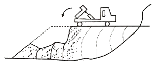
- 수평층 쌓기
- 전방층 쌓기
- 비계층 쌓기
- 물다짐 공법
(정답률: 61%)
25. 공정관리에서 PERT와 CPM의 비교 설명으로 옳은 것은?
- PERT는 반복사업에, CPM은 신규사업에 좋다.
- PERT는 1점 시간추정이고, CPM은 3점 시간추정이다.
- PERT는 작업호라동 중심관리이고, CPM은 작업단계 중심관리이다.
- PERT는 공기 단축이 주목적이고, CPM은 공사비 절감이 주목적이다.
(정답률: 68%)
26. 아래에서 설명하는 심빼기 발파공법의 명칭은?
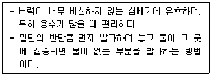
- 노 컷
- 번 컷
- 스윙 컷
- 피라미드 컷
(정답률: 52%)
27. 그림과 같이 20개의 말뚝으로 구성된 무리말뚝이 있다. 이 무리말뚝의 효율(E)을 Converse-Labarre식을 이용해서 구하면?
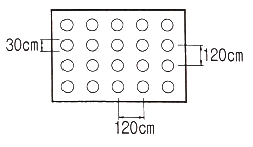
- 0.647
- 0.684
- 0.721
- 0.758
(정답률: 42%)
28. 배수로의 설계 시 유의해야 할 사항으로 틀린 것은?
- 집수면적이 커야 한다.
- 유하속도는 느릴수록 좋다.
- 집수지역은 다소 깊어야 한다.
- 배수 단면은 하류로 갈수록 커야 한다.
(정답률: 66%)
29. 그림과 같은 네트워크 공정표에서 주공정선(CP)으로 옳은 것은?
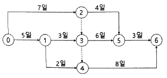
- 0→1→3→5→6
- 0→1→3→4→6
- 0→2→5→6
- 0→1→4→6
(정답률: 75%)
30. 콘크르트교의 가설공법 중 현장타설 콘크르트에 의한 공법의 종류에 속하지 않는 것은?
- 동바리공법(FSM 공법)
- 캔딜레버 공법(FCM 공법)
- 이동식 비계공법(MSS 공법)
- 프리캐스트 세그먼트공법(PSM 공법)
(정답률: 52%)
31. 터널공사에 있어서 TBM공법의 특징에 대한 설명으로 틀린 것은?
- 여굴이 거의 발생하지 않는다.
- 주변 암반에 대한 이완이 거의 없다.
- 복잡한 지질변화에 대한 적응성이 좋다.
- 갱내의 분진, 진동 등 환경조건이 양호하다.
(정답률: 63%)
32. 옹벽을 구조적 특성에 따라 분류할 때 여기에 속하지 않는 것은?
- 돌쌓기 옹벽
- 중력식 옹벽
- 부벽식 옹벽
- 켄틸레버식 옹벽
(정답률: 72%)
33. 무한궤도식 건설기계의 운전중량이 22t, 접지길이가 270cm, 무한궤도의 폭(슈폭)이 55cm일 때 이 건설기계의 접지압은? (단, 무한궤도 트랙의 수는 2개이다.)
- 0.37 kg/cm2
- 0.74 kg/cm2
- 1.48 kg/cm2
- 2.96 kg/cm2
(정답률: 48%)
34. 아스팔트 포장과 콘크리트 포장을 비교 설명한 것 중 아스팔트 포장의 특징으로 틀린 것은?
- 초기 공사비가 고가이다.
- 양생기간이 거의 필요 없다.
- 주행성이 콘크리트 포장보다 좋다.
- 보수 작업이 콘크리트 포장보다 쉽다.
(정답률: 66%)
35. 30000m3의 성토 공사를 위하여 토량의 변화율이 L=1.2, C=0.9인 현장 흙을 굴착 운반하고자 한다. 이때 운반 토량은?
- 22500m3
- 32400m3
- 40000m3
- 62500m3
(정답률: 68%)
36. 토적곡선(mass curve)의 성질에 대한 설명으로 틀린 것은?
- 토적곡선상에 동일 단면 내의 절토량과 성토량은 구할 수 없다.
- 토적곡선이 기선 아래에서 종결될 때에는 토량이 부족하고, 기선 위에서 종결될 때에는 토량이 남는다.
- 기선에 평행한 임의의 직선을 그어 토적곡선과 교차하는 인접한 교차점 사이의 절토량과 성토량은 서로 같다.
- 토적곡선이 평형선 위쪽에 있을 때 절취토는 우에서 좌로 운반되고, 반대로 아래쪽에 있을 때는 좌에서 우로 운반된다.
(정답률: 44%)
37. 디퍼 준설선(Dipper Dredger)의 특징으로 틀린 것은?
- 기계의 고장이 비교적 적다.
- 작업장소가 넓지 않아도 된다.
- 암석이나 굳은 지반의 준설에 적합하고 굴착력이 우수하다.
- 준설비가 비교적 저렴하고, 연속식에 비하여 작업능률이 뛰어나다.
(정답률: 42%)
38. 우물통의 침하 공법 중 초기에는 자중으로 침하 되지만 심도가 깊어짐에 따라 콘크리트 블록, 흙가마니 등이 사용되는 공법은?
- 분기식 침하 공법
- 물하중식 침하 공법
- 재하중에 의한 공법
- 발파에 의한 침하 공법
(정답률: 63%)
39. 아스팔트 포장의 안정성 부족으로 인해 발생하는 대표적인 파손은 소성변형(바퀴자국, 측방유동)이다. 소성변형의 원인이 아닌 것은?
- 수막현상
- 중추량 통행
- 여름철 고온 현상
- 표시된 차선에 따라 차량이 일정위치로 주행
(정답률: 74%)
40. 흙 댐(Earth dam)의 특징에 대한 설명으로 틀린 것은?
- 성토용 재료의 구입이 용이하며 경제적이다.
- 높은 댐의 축조가 어려우며, 내진력이 약하다.
- 여수로의 설치가 필요치 않아 공사비가 저렴하다.
- 기초 지반이 비교적 견고하지 않더라도 축조가 가능하다.
(정답률: 60%)
3과목: 건설재료 및 시험
41. 콘크리트용 혼화제에 대한 일반적인 설명으로 틀린 것은?
- AE제에 의한 연행공기는 시멘트, 골재입자 주위에서 베이렁(bearing)과 같은 작용을 함으로써 콘크리트의 워커빌리티를 개선하는 효과가 있다.
- 고성능 감수제는 그 사용방법에 따라 고강도 콘크리트용 감수제와 유동화제로 나누어지지만 기본적인 성능은 동일하다.
- 촉진제는 응결시간이 빠르고 조기강도를 증대 시키는 효과가 있기 때문에 여름철공사에 사용하면 유리하다.
- 지연제로 사일로, 대형구조물 및 수조 등과 같이 연속 타설을 필요로 하는 콘크리트 구조에 작업이음과 발생 등의 방지에 유효하다.
(정답률: 58%)
42. 아스팔트의 성질에 대한 설명으로 틀린 것은?
- 아스팔트의 밀도는 침입도가 작을수록 작다.
- 아스팔트의 밀도는 온도가 상승할수록 저하된다.
- 아스팔트는 온도에 따라 컨시스턴시가 현저하게 변화된다.
- 아스팔트의 강성은 온도가 높을수록, 침입도가 클수록 작다.
(정답률: 54%)
43. 도폭선에서 심약(心藥)으로 사용되는 것은?
- 뇌홍
- 질화납
- 면화약
- 피크린산
(정답률: 52%)
44. 냉간가공을 했을 때 강재의 특성으로 틀린 것은?
- 경도가 증가한다.
- 신장률이 증가한다.
- 항복점이 증가한다.
- 인장강도가 증가한다.
(정답률: 39%)
45. 시멘트의 강열감량(ignition loss)에 대한 설명으로 틀린 것은?
- 강열감량은 시멘트에 약 1000℃의 강한 열을 가했을 때의 시멘트 중량감소량을 말한다.
- 강열감량은 주로 시멘트 속에 포함된 H2O와 CO2의 양이다.
- 강열감량은 클링커와 혼합하는 석고의 결정수량과 거의 같은 양이다.
- 시멘트가 풍화하면 강열감량이 적어지므로 풍화의 정도를 파악하는데 사용된다.
(정답률: 44%)
46. 굵은 골재의 밀도 시험 결과가 아래와 같을 때 이 골재의 표면 건조 포화 상태의 밀도는?
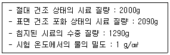
- 2.50 g/cm3
- 2.61 g/cm3
- 2.68 g/cm3
- 2.82 g/cm3
(정답률: 54%)
47. 잔골재를 계량한 결과가 아래와 같을 때 흡수율은?
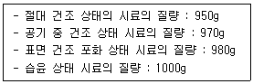
- 2.06%
- 3.06%
- 3.16%
- 3.26%
(정답률: 52%)
48. 스트레이트 아스팔트와 비교한 고무혼입 아스팔트(rubberized asphalt)의 특징으로 틀린 것은?
- 응집성 및 부착력이 크다.
- 마찰계수가 크다.
- 충격저항이 크다.
- 감온성이 크다.
(정답률: 56%)
49. 로스앤젤레스 시험기에 의한 굵은 골재의 마모 시험 결과가 아래와 같을 때 마모 감량은?
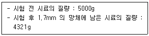
- 6.4%
- 7.4%
- 13.6%
- 15.7%
(정답률: 50%)
50. 방청제를 사용한 콘크리트에서 방청제의 작용에 의한 방식 방법으로 틀린 것은?
- 콘크리트 중의 철근표면의 부동태 피막을 보강하는 방법
- 콘크리트 중의 이산화탄소를 소비하여 철근에 도달하지 않도록 하는 방법
- 콘크리트 중의 염소이온을 결합하여 고정하는 방법
- 콘크리트의 내부를 치밀하게 하여 부식성 물질의 침투를 막는 방법
(정답률: 45%)
51. 토목섬유가 힘을 받아 한 방향으로 찢어지는 특성을 측정하는 시험법은 무엇인가?
- 인열강도시험
- 할렬강도시험
- 봉합강도시험
- 직접전단시험
(정답률: 22%)
52. 화성암은 산성암, 중성암, 염기성암으로 분류가 되는데, 이때 분류 기준이 되는 것은?
- 규산의 함유량
- 운모의 함유량
- 장석의 함유량
- 각섬석의 함유량
(정답률: 66%)
53. 석재로서 화강암의 특징에 대한 설명으로 틀린 것은?
- 조직이 균일하고 내구성 및 강도가 크다.
- 외관이 아름다워 장식재로 사용할 수 있다.
- 균열이 적기 때문에 비교적 큰 재료를 채취할 수 있다.
- 내화성이 강하므로 고열을 받는 내화용재료로 많이 사용된다.
(정답률: 50%)
54. 시멘트의 응결에 영향을 미치는 요소에 대한 설명으로 틀린 것은?
- 풍화된 시멘트는 일반적으로 응결이 빨라진다.
- 온도가 높을수록 응결은 빨라진다.
- 배합 수량이 많을수록 응결은 지연된다.
- 석고의 첨가량이 많을수록 응결은 지연된다.
(정답률: 43%)
55. 혼화재 등 대표적인 포졸란의 일종으로서, 석탄 화력발전소 등에서 미분탄을 연소시킬 때 불연 부분이 용융상태로 부유한 것을 냉각 고화시켜 채취한 미분탄재를 무엇이라고 하는가?
- 플라이애시
- 고로슬래그
- 실라카흄
- 소성점토
(정답률: 56%)
56. 골재의 취급과 저장 시 주의해야 할 사항으로 틀린 것은?
- 잔골재, 굵은 골재 및 종류, 입도가 다른 골재는 각각 구분하여 별도로 저장한다.
- 골재의 저장설비는 적당한 배수설비를 설치하고 그 용량을 검토하여 표면수가 균일한 골재의 사용이 가능하도록 한다.
- 골재의 표면수는 굵은 골재는 건조 상태로, 잔골재는 습윤 상태로 저장하는 것이 좋다.
- 골재는 빙설의 혼입방지, 동결방지를 위한 적당한 시설을 갖추어 저장해야 한다.
(정답률: 78%)
57. 아래는 길모어 침에 의한 시멘트의 응결시간 시험방법(KS L 5103)에서 습도에 대한 내용이다. 아래의 ( ) 안에 들어갈 내용으로 옳은 것은?
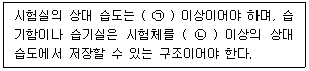
- ㉠ : 30%, ㉡ : 60%
- ㉠ : 50%, ㉡ : 70%
- ㉠ : 30%, ㉡ : 80%
- ㉠ : 50%, ㉡ : 90%
(정답률: 42%)
58. 아래에서 설명하는 합판은?
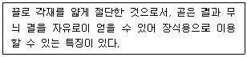
- 소드 베니어
- 로터리 베니어
- 파티클 보드(PB)
- 슬라이스트 베니어
(정답률: 40%)
59. 다음 강재의 응력-변형률 곡선에 대한 설명으로 틀린 것은?
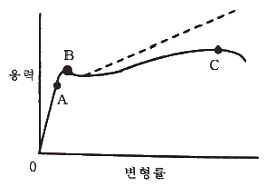
- A점은 응력과 변형률이 비례하는 최대 한도지점이다.
- B점은 외력을 제거해도 영구변형을 남기지 않고 원래로 돌아가는 응력의 최대한도 지점이다.
- C점은 부재 응력의 최댓값이다.
- 강재는 하중을 받아 변형되며 단면이 축소되므로 실제 응력-변형률 선은 점선이다.
(정답률: 63%)
60. 도로포장용 아스팔트는 수분을 함유하지 않고 몇 ℃까지 가열하여도 거품이 생기지 않아야 하는가?
- 150℃
- 175℃
- 220℃
- 280℃
(정답률: 34%)
4과목: 토질 및 기초
61. 비교적 가는 모래와 실트가 물속에서 침강하여 고리 모양을 이루며 작은 아치를 형성한 구조로 단립구조보다 간극비가 크고 충격과 진동에 약한 흙의 구조는?
- 봉소구조
- 낱알구조
- 분산구조
- 면모구조
(정답률: 39%)
62. 모래시료에 대해서 압밀배수 삼축압축시험을 실시하였다. 초기 단계에서 구속응력(σ3)은 100kN/m2이고, 전단파괴시에 작용된 축차응력(σdf)은 200kN/m2 이었다. 이와 같은 모래시료의 내부마찰각(ø) 및 파괴면에 작용하는 전단응력(τf)의 크기는?
- ø = 30°, τf = 115.47 kN/m2
- ø = 40°, τf = 115.47 kN/m2
- ø = 30°, τf = 86.60 kN/m2
- ø = 40°, τf = 86.60 kN/m2
(정답률: 41%)
63. 말뚝의 부주면마찰력에 대한 설명으로 틀린 것은?
- 연약한 지반에서 주로 발생한다.
- 말뚝 주변의 지반이 말뚝보다 더 침하될 때 발생한다.
- 말뚝주변에 역청 코팅을 하면 부주면 마찰력을 감소시킬 수 있다.
- 부주면마찰력의 크기는 말뚝과 흙 사이의 상대적인 변위속도와는 큰 연관성이 없다.
(정답률: 73%)
64. 말뚝기초에 대한 설명으로 틀린 것은?
- 군항은 전달되는 응력이 겹쳐지므로 말뚝 1개의 지지력에 말뚝 개수를 곱한 값보다 지지력이 크다.
- 동역학적 지지력 공식 중 엔지니어링 뉴스 공식의 안전율(Fs)은 6이다.
- 부주면마찰력이 발생하면 말뚝의 지지력은 감소한다.
- 말뚝기초는 기초의 분류에서 깊은 기초에 속한다.
(정답률: 50%)
65. 두께 9m의 점토층에서 하중강도 P1일 때 간극비는 2.0이고 하중강도를 P2로 증가시키면 간극비는 1.8로 감소되었다. 이 점토층의 최종 압밀 침하량은?
- 20cm
- 30cm
- 50cm
- 60cm
(정답률: 24%)
66. 그림과 같이 3개의 지층으로 이루어진 지반에서 토층에 수직한 방향의 평균 투수계수(kv)는?
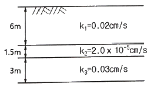
- 2.516×10-6 cm/s
- 1.274×10-5 cm/s
- 1.393×10-4 cm/s
- 2.0×10-2 cm/s
(정답률: 54%)
67. 아래 그림과 같은 흙의 구성도에서 체적 V를 1로 했을 때의 간극의 체적은? (단, 간극률은 n, 함수비는 w, 흙입자의 비중은 Gs, 물의 단위중량은 γw)
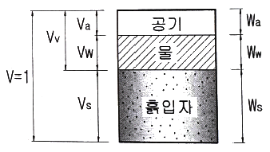
- n
- wGs
- γw(1-n)
- [Gs-n(Gs-1)]γw
(정답률: 44%)
68. 평판재하시험에 대한 설명으로 틀린 것은?
- 순수한 점토지반의 지지력은 재하판 크기와 관계없다.
- 순수한 모래지반의 지지력은 재하판의 폭에 비례한다.
- 순수한 점토지반의 침하량은 재하판의 폭에 비례한다.
- 순수한 모래지반의 침하량은 재하판의 폭에 관계없다.
(정답률: 56%)
69. 두께 2cm의 점토시료에 대한 압밀 시험결과 50%의 압밀을 일으키는데 6분이 걸렸다. 같은 조건하에서 두께 3.6m의 점토층 위에 축조한 구조물이 50%의 압밀에 도달하는데 며칠이 걸리는가?
- 1350일
- 270일
- 135일
- 27일
(정답률: 32%)
70. 토립자가 둥글고 입도분포가 나쁜 모래 지반에서 표준관입시험을 한 결과 N값을 10이었다. 이 모래의 내부 마찰각(ø)을 Dunham의 공식으로 구하면?
- 21°
- 26°
- 31°
- 36°
(정답률: 43%)
71. 그림과 같이 폭이 2m, 길이가 3m인 기초에 100kN/m2의 등분포 하중이 작용할 때, A점 아래 4m 깊이에서의 연직응력 증가량은? (단, 아래 표의 영향계수 값을 활용하여 구하며, m=B/z, n=L/z이고, B는 직사각형 단면의 폭, L은 직사각형 단면의 길이, z는 토층의 깊이이다.)
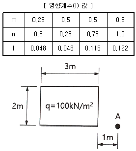
- 6.7 kN/m2
- 7.4 kN/m2
- 12.2 kN/m2
- 17.0 kN/m2
(정답률: 46%)
72. 기초가 갖추어야 할 조건이 아닌 것은?
- 동결, 세굴 등에 안전하도록 최소한의 근입깊이를 가져야 한다.
- 기초의 시공이 가능하고 침하량이 허용치를 넘지 않아야 한다.
- 상부로부터 오는 하중을 안전하게 지지하고 기초지반에 전달하여야 한다.
- 미관상 아름답고 주변에서 쉽게 구득할 수 있는 재료로 설계되어야 한다.
(정답률: 63%)
73. 벽체에 작용하는 주동토압을 Pa, 수동토압을 Pp, 정지토압을 Po라 할 때 크기의 비교로 옳은 것은?
- Pa ＞ Pp ＞ Po
- Pp ＞ Po ＞ Pa
- Pp ＞ Pa ＞ Po
- Po ＞ Pa ＞ Pp
(정답률: 60%)
74. 지반개량공법 중 주로 모래질 지반을 개량하는데 사용되는 공법은?
- 프리로딩 공법
- 생석회 말뚝 공법
- 페이퍼 드레인 공법
- 바이브로 플로테이션 공법
(정답률: 58%)
75. 포화된 점토에 대하여 비압밀비배수(UU) 시험을 하였을 때 결과에 대한 설명으로 옳은 것은? (단, ø : 내부마찰각, c : 점착력)
- ø와 c가 나타나지 않는다.
- ø와 c가 모두 “0”이 아니다.
- ø는 “0”이 아니지만 c는 “0”이다.
- ø는 “0”이고 c는 “0”이 아니다.
(정답률: 49%)
76. 흙의 다짐시험에서 다짐에너지를 증가시킬 때 일어나는 결과는?
- 최적함수비는 증가하고, 최대건조단위중량은 감소한다.
- 최적함수비는 감소하고, 최대건조단위중량은 증가한다.
- 최적함수비와 최대건조단위중량이 모두 감소한다.
- 최적함수비와 최대건조단위중량이 모두 증가한다.
(정답률: 71%)
77. 점토지반으로부터 불교란 시료를 채취하였다. 이 시료의 지름이 50mm, 길이가 100mm, 습윤 질량이 350g, 함수비가 40% 일 때 이 시료의 건조밀도는?
- 1.78 g/cm3
- 1.43 g/cm3
- 1.27 g/cm3
- 1.14 g/cm3
(정답률: 62%)
78. 응력경로(stress path)에 대한 설명으로 틀린 것은?
- 응력경로는 특성성 전응력으로만 나타낼 수 있다.
- 응력경로란 시료가 받는 응력의 변화과정을 응력공간에 궤적으로 나타낸 것이다.
- 응력경로는 Mohr의 응력원에서 전단응력이 최대인 점을 연결하여 구한다.
- 시료가 받는 응력상태에서 대란 응력경로는 직선 또는 곡선으로 나타난다.
(정답률: 62%)
79. 유선망의 특징에 대한 설명으로 틀린 것은?
- 각 유로의 침투수량은 같다.
- 동수경사는 유선망의 폭에 비례한다.
- 인접한 두 등수두선 사이의 수두손실은 같다.
- 유선망을 이루는 사변형은 이론상 정사각형이다.
(정답률: 60%)
80. 암반층 위에 5m 두께의 토층이 경사 15°의 자연사면으로 되어 있다. 이 토층의 강도정수 c=15kN/m2, ø=30°이며, 포화단위중량(γsat)은 18 kN/m3이다. 지하수면은 토층의 지표면과 일치하고 침투는 경사면과 대략 평행이다. 이때 사면의 안전율은? (단, 물의 단위중량은 9.81 kN/m3 이다.)
- 0.85
- 1.15
- 1.65
- 2.⑤
(정답률: 31%)